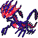

PokémonEMMA'S EMERALD
OFFICIAL Strategy Guide
Seafloor Cavern Room 9: Eternatus
‹ Seafloor Cavern Room8Quest: Seafloor Cavern: the Ultra Beasts (8 badges, LV55–60) · 7 of 7Back to the side quests ›
TIP
No wild Pokémon in the grass here. Time of day: M = morning (6–10), D = day (10–19), E = evening (19–20), N = night (20–6).
Event 1: Eternatus
Kyogre's old chamber. After the Hall of Fame Eternatus (level 70) fills it. Poison/Dragon: Ice, Ground, Psychic or Dragon.

Legendary Pokémon here
Eternatus
LV70
PoisonDragon
from Champion
Static encounters: walk up and press A. Caught = gone for good; beaten or fled = back next visit.
‹ Seafloor Cavern Room8Quest: Seafloor Cavern: the Ultra Beasts (8 badges, LV55–60) · 7 of 7Back to the side quests ›
50